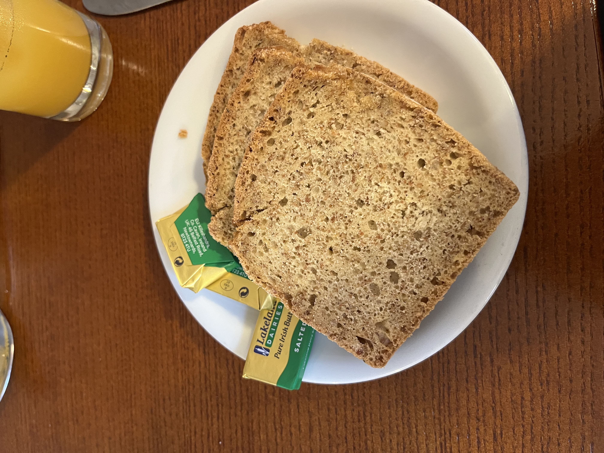
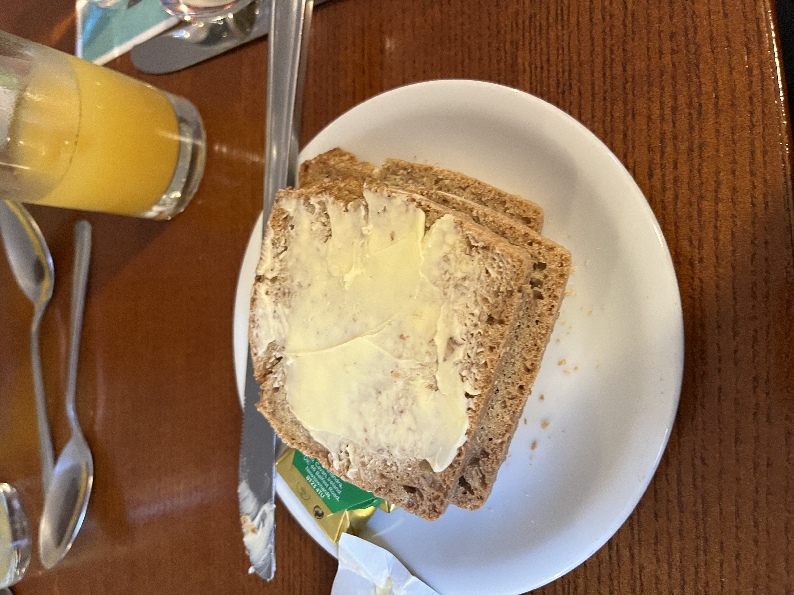
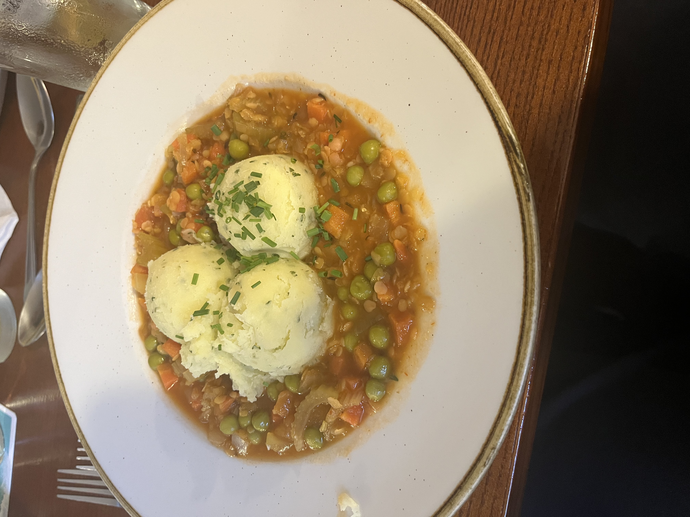
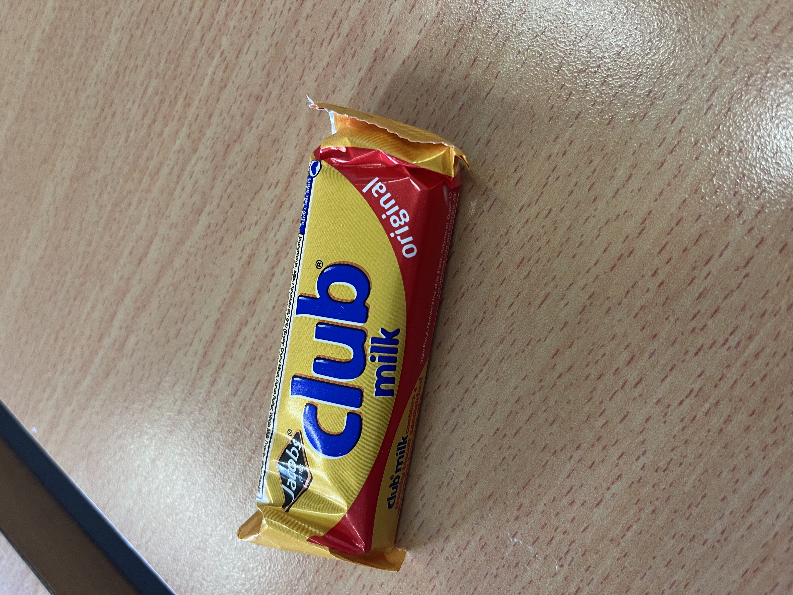
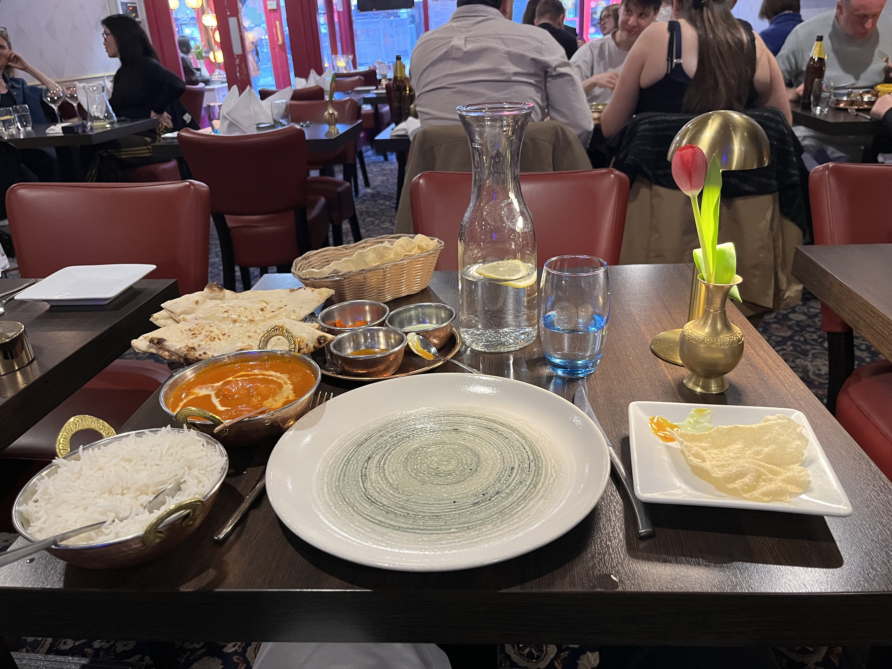
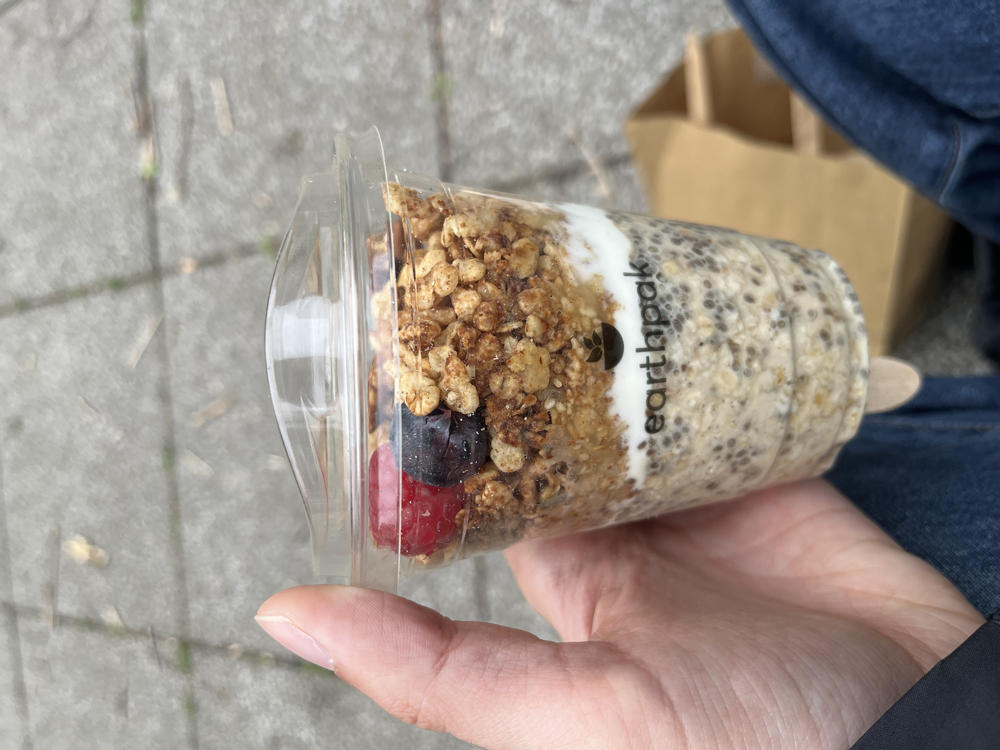
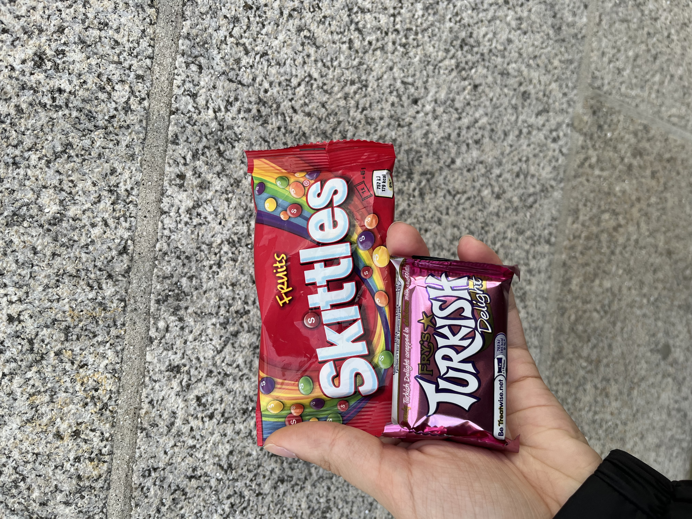
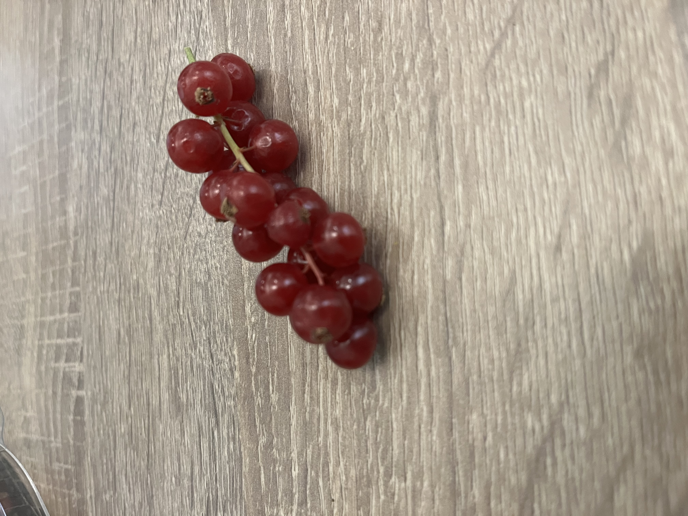

Ireland — Grid Gallery
Style this .grid with display: grid and
repeat(auto-fill, minmax(220px, 1fr)) in styles.css.





/*intentionally blan becuase it is explained in the caption*/




/*intentionally blan becuase it is explained in the caption*/Food & Drink — Flex Gallery
Style this .flex with display: flex,
flex-wrap: wrap, and flex: 1 0 250px; on the figures.
About this site
This is a class assignment. Replace this paragraph with a short blurb about your trip and what kind of accessibility considerations you put into the design.